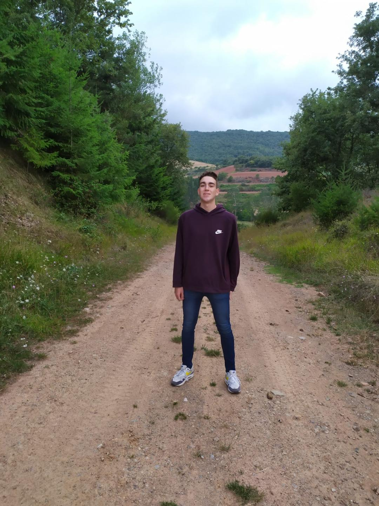

Bienvenido a mi web, aqui encontraras algunos detalles sobre mi y espero que cuando leas esto dentro de unos meses este un poco mejor de como esta ahora.
Soy un chaval de 18 años de madrid, al que le gusta la informatica y deportes como el baloncesto y el esqui. Actualmente estoy estudiando un doble grado en ingeniera del software y tecnologias para la sociedad de la informacion en la UPM.
